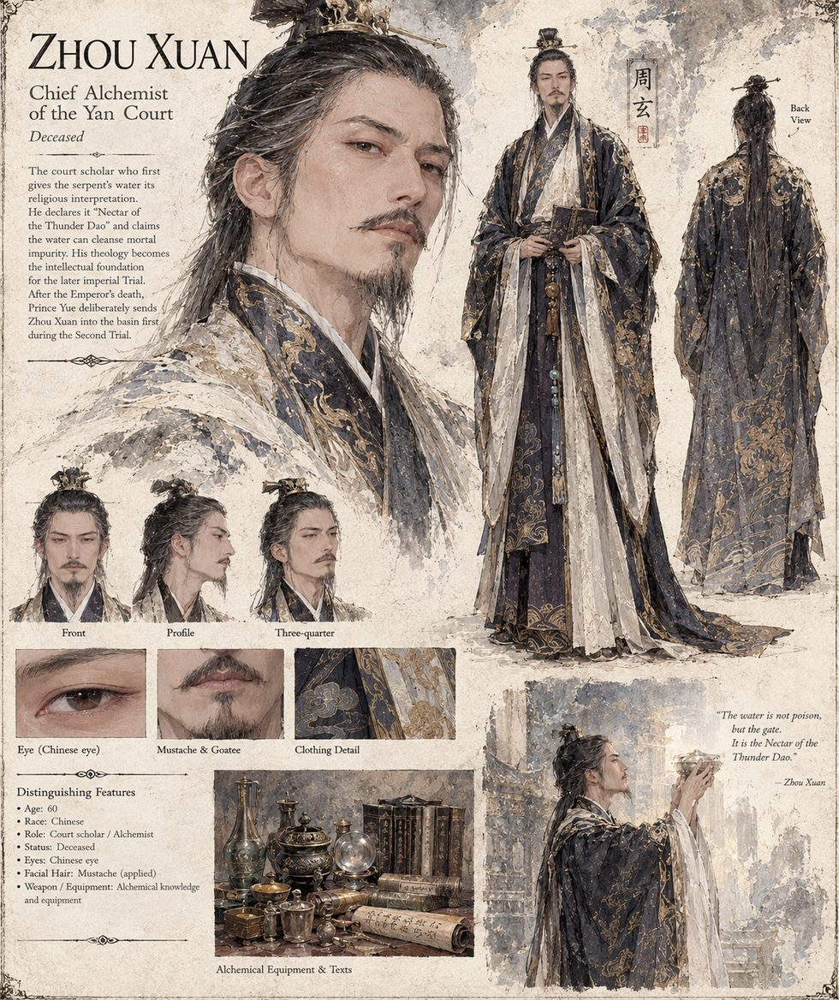

Zhou Xuan
Chief Alchemist of the Yan Court · thirty years of elixirs · Deceased
For thirty years he has compounded elixirs that cured nothing and offended no one. When the serpent reaches Yujing he lets the Court Alchemists debate its provenance for four days with total confidence and no evidence whatsoever, then declares, on the fifth, that the water has been transformed by prolonged contact with a spirit-beast of the old Heavenly Tribulation lineage. This Nectar of the Thunder Dao, as he names it on the spot — testing the phrase in his mouth like a man trying on a ring he already intended to keep — can cleanse mortal impurity from anyone permitted to enter it. The theology he improvises over a tank of river water becomes the intellectual foundation of the Solstice Trial.
Mei Suwen brings him her numbers, and he has a fluent answer to every one. After the old Emperor's death, Prince Yue names the Chief Alchemist first into the basin of the Second Trial, and the court enters his death under theology rather than command. His rival and successor Fu Baishi spends the rest of the siege improving on his doctrine.
“The water is not poison, but the gate. It is the Nectar of the Thunder Dao.”
Appears in The Heavenly Thunder-Serpent